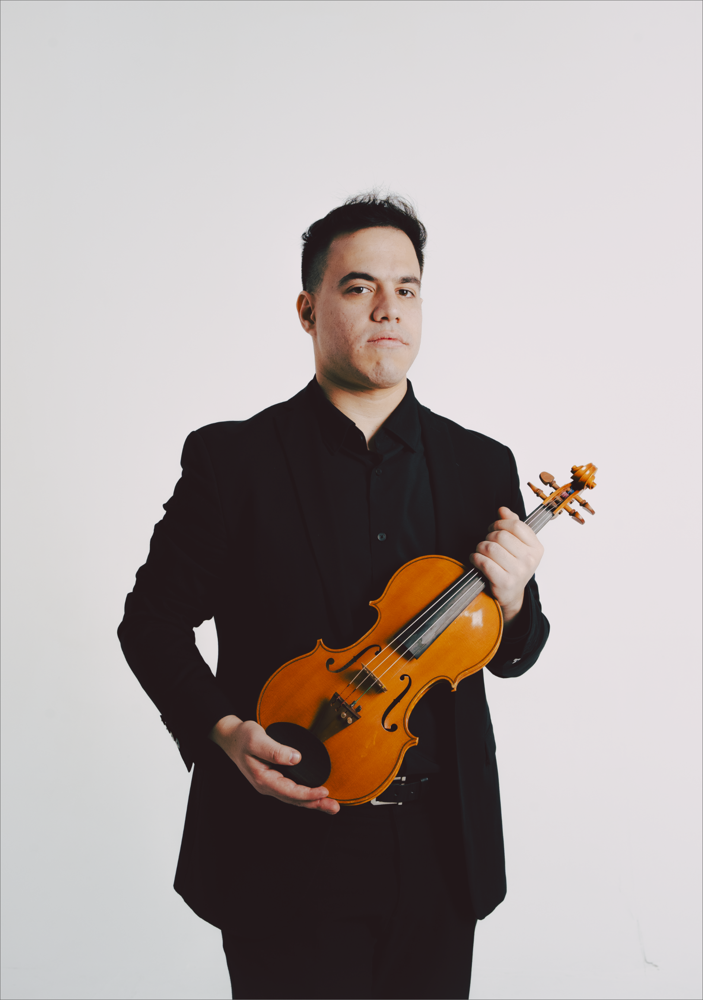
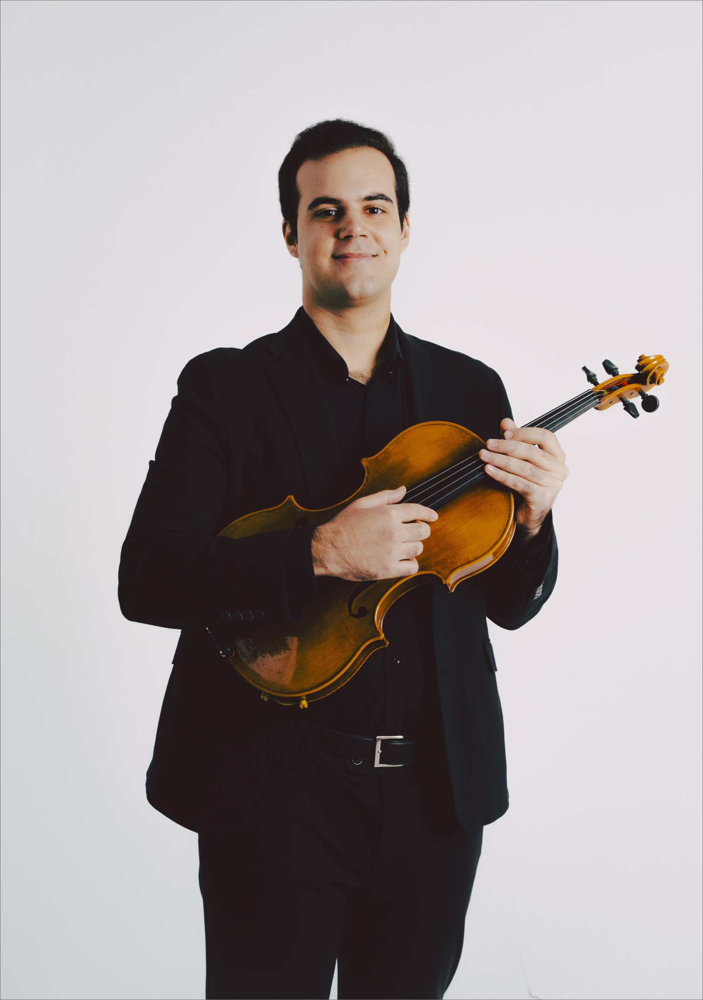
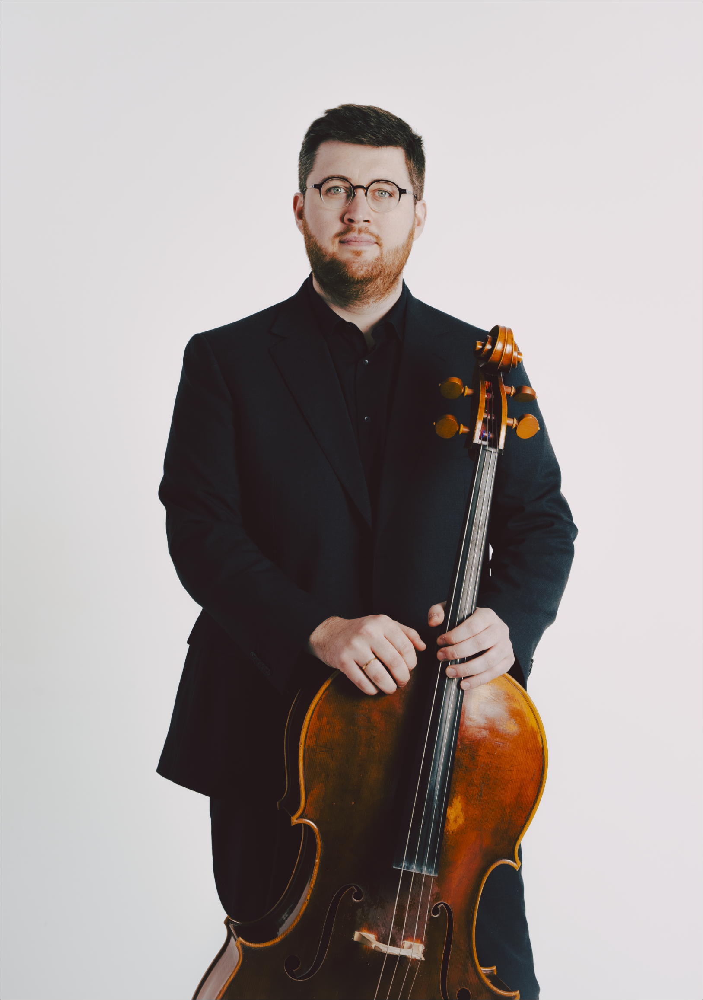

«Uno de los cuartetos más prominentes de la escena.» Melómano digital
Madrid, 2018. Cuatro músicos, una visión.
Marta Peño (violín), Luis Rodríguez (violín), Mario Oltra (viola), Arnold Rodríguez (violoncello).
El Cuarteto Iberia se funda en Madrid en el año 2018. Desde su creación el cuarteto ha mantenido la tradición cuartetística de sus maestros, aportando un nuevo punto de vista a la interpretación de las grandes obras del género. Desde muy jóvenes, la necesidad individual de cada uno de los miembros por profundizar en la obra escrita para cuarteto de cuerda les ha llevado a juntarse y crear esta agrupación, la cual es el máximo exponente de su expresión artística y con la que logran crear una atmósfera musical excepcional.
En junio de 2021 ganan la plaza para estudiar dentro de la cátedra de cuarteto de cuerda de la Universität Mozarteum Salzburg con el Uni. Prof. Cibrán Sierra (Cuarteto Quiroga).
Asimismo han recibido masterclasses de Valentin Erben e Isabel Charisius (Alban Berg Quartett), Heime Müller (Artemis Quartett), Rainer Schmidt, Lukas Hagen y Veronika Hagen (Hagen Quartett), Paul Watkins (Emerson String Quartet), Kuss Quartett, Frank Reinecke y Stefan Fehlandt (Vogler Quartett), Simone Gramaglia (Quartetto di Cremona), Jonathan Brown y Abel Tomás (Cuarteto Casals), Helena Poggio (Cuarteto Quiroga), Carole Petitdemange (Quatuor Ardeo), Leonhard Roczek (Minetti Quartett), Alasdair Tait (Belcea Quartet) y André J. Roy.
Destaca también su participación en festivales internacionales en Salzburgo, Würzburg, Weikersheim, París, Montréal, Venecia, Milán o Lucca. En el ámbito nacional, en Madrid, Barcelona, Granada, Burgos, León o Santander.
Forma parte de varias instituciones europeas de cuarteto como ECMA, Le Dimore del Quartetto y ProQuartet, y es uno de los 38 cuartetos seleccionados en el proyecto europeo MERITA. A su vez, lleva a cabo una labor pedagógica impartiendo clases y cursos a jóvenes músicos y agrupaciones.
Ha sido galardonado con el primer premio en el XI Concurso Internacional de Música de Cámara «Antón García Abril», con el primer premio en el 26 Concurso de Música de Cámara Josep Mirabent i Magrans de Cataluña, con el segundo premio en el XIX Concurso Internacional de Música de Cámara de Arnuero, con el segundo premio en el I Concurso de Música de Cámara «Ciutat d'Altea» y con Mención de Honor en el Zukungsklang Award 2022 Stuttgart.
Desde inicios del 2022 el Cuarteto Iberia es cuarteto residente del Museo Lázaro Galdiano de Madrid y miembros de la Real Sociedad Menéndez Pelayo, fundada en 1918. Tocan instrumentos modernos de Cremona (Pascal Hornung, Diego Taje y Martin Gabbani) y un violín de autor desconocido del siglo XVIII de Mittenwald.
Una de las grandes cualidades del cuarteto es su versatilidad a la hora de abarcar la música de compositores muy diversos y crear proyectos basados en la investigación y el estudio de la obra de autores de diferente época y estilo.
Cuatro voces, una conversación.
-

-

-

-
